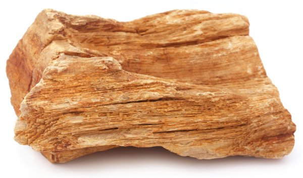
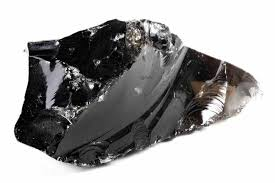

El primer paso es meteorización,el agua,aire o el hielo rompen pedasitos de montañas.El siguiente paso es la erosion,el hielo,aire o agua mueven los pedasitos de las montañas.
El tercer paso es deposición cuando los pedasos se quedan en un rio o mar y pasan millones de años y hay mas ileras.Esto hace el 4 paso,la compactación.Que por la presion hace las ileras.Y el ultimo paso cementación cuando las ileras se unen creando nuestro producto final,una roca sedimentaria.
Aqui abajo te dejo un video de la formacion de diamantes
Tambien existe la obsidiana,es formada cuando la lava se enfria lo suficiente para endurecer.Como siempre te mostrare una foto de una roca obsidiana.
Tambien puedes hacer tu propia roca que puede hacer una erupcion